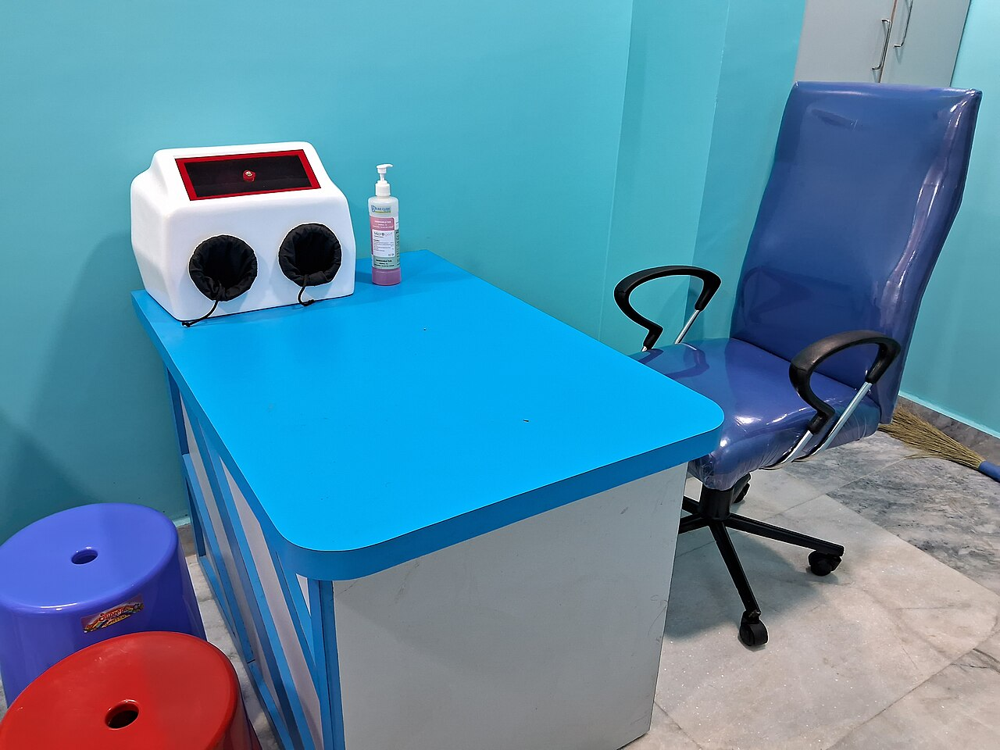

Your nearest full-service dental clinic — Hitech Dental Clinic, just 15 km from Dharpally.

Dharpally is one of the closest towns to Nizamabad city, making Hitech Dental Clinic an ideal choice for Dharpally residents who want top-quality dental care without a long journey. At just 15 km, we are practically your neighborhood dentist.
Many Dharpally patients visit us for regular six-month cleanings, making the short trip part of their health routine. Our evening hours accommodate those who work during the day.
Take the road towards Nizamabad city from Dharpally. Our clinic in Khaleelwadi is easy to find opposite Rajiv Gandhi Auditorium.